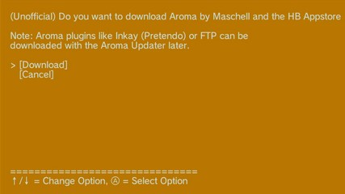

Descargar Aroma
Condición: Se muestra cuando la carpeta de Aroma (
sd:/wiiu/environments/aroma) no existe en la tarjeta SD (real o emulada).Pantalla:

(Unofficial) Do you want to download Aroma by Maschell and the HB Appstore now? Note: Aroma plugins like Inkay (Pretendo) or FTP can be downloaded with the Aroma Updater later. [Download] [Cancel]
Esto descargará el cargador de entorno (EnvironmentLoader) en sd:/wiiu/payload.rpx, el entorno base de Aroma sd:/wiiu/environments/aroma y las aplicaciones predeterminadas en sd:/wiiu/apps en la tarjeta SD (real o emulada). Este proceso equivale a descargar EnvironmentLoader y Base-Aroma desde aroma.foryour.cafe y extraerlos en la tarjeta SD.
La tienda de aplicaciones homebrew (Homebrew App Store) y la aplicación Wafel Installer también se descargarán en sd:/wiiu/apps en la tarjeta SD (real o emulada).
La descarga puede tardar unos 5 minutos, sé paciente. Más adelante, podrás descargar algunos plugins y módulos de Aroma mediante la aplicación Aroma Updater, así como aplicaciones homebrew a través de la Homebrew App Store.